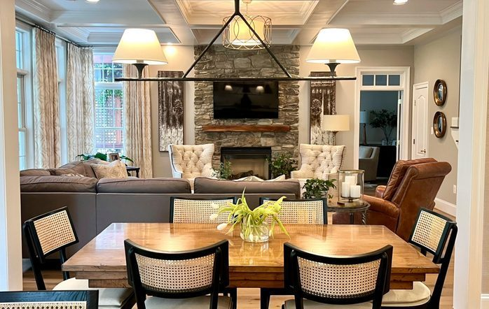
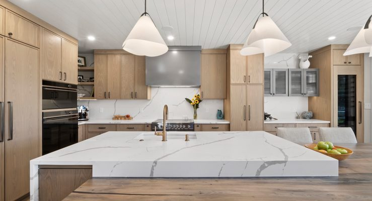
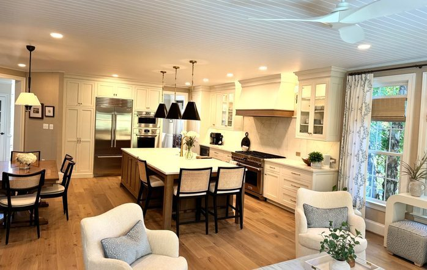

Residential Interior Design & Renovation
Beyond The Mill Design creates warm, timeless interiors — built around the people who live in them.
From full renovations and kitchens to furnishings and custom millwork, we create rooms that feel collected, not decorated — rooted in natural materials, thoughtful craftsmanship, trusted trade relationships, and the way your family really lives.





Beyond The Mill is as comfortable with the construction conversation as with fabrics and finishes. We guide the whole home — layout, cabinetry, materials, lighting, and scale through to furnishings and the final styled details — in close collaboration with trusted builders and trades.
Cohesive, end-to-end design for the whole home — from first concept to the final styled room.
Layouts, finishes, and the construction decisions behind them — planned and managed alongside your trades.
Cabinetry, materials, and millwork designed to work beautifully and last for years.
Furniture, textiles, lighting, and art — the lived-in details that make a house feel like home.
Built-ins and bespoke pieces, designed and crafted specifically for your space.

For me, design has always been personal. I love getting to know a family — how they gather, how they unwind, what makes a house feel like theirs — and shaping spaces around that.
With more than 30 years in the industry, I bring a practiced eye, deep trade relationships, and a highly personal approach to every project — rooted in natural materials, thoughtful craftsmanship, and the belief that a home should feel both beautiful and truly livable.
It starts with a conversation in your home — how you live, what you love, what you want it to feel like. No pressure, lots of listening.
Layouts, finishes, custom millwork, and furnishings come together into one clear vision — sourced and managed so you don't have to.
We work shoulder to shoulder with our trusted trades to bring it to life, then hand you back a home that feels finished, personal, and entirely yours.
Beyond The Mill Design takes on residential projects nationwide. Over the years, much of our work has centered on a handful of communities we've come to know especially well — places where long-standing relationships with trusted builders and trades make every project smoother:
Southwest Florida includes Sarasota, Longboat Key, Bradenton, and nearby coastal communities.
Tell us about your home and what you're hoping to create — we'd love to hear from you.
Inquire About a Project